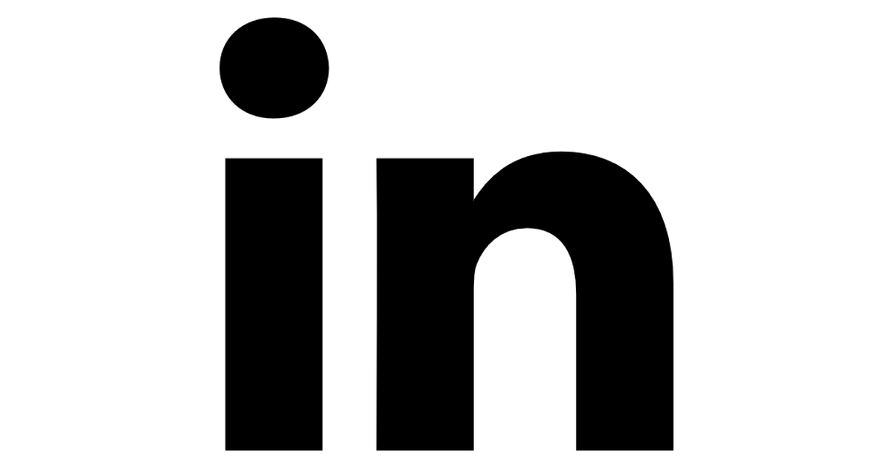
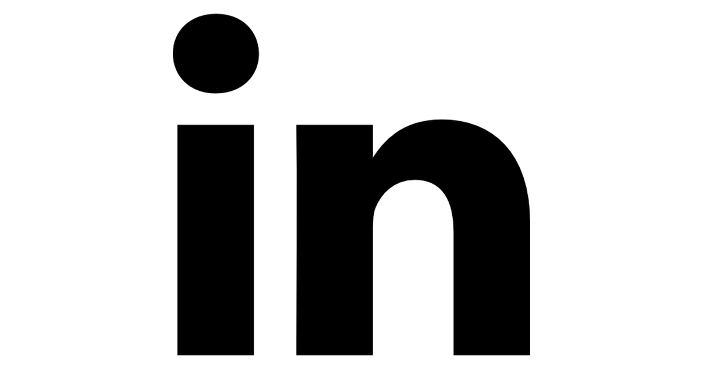
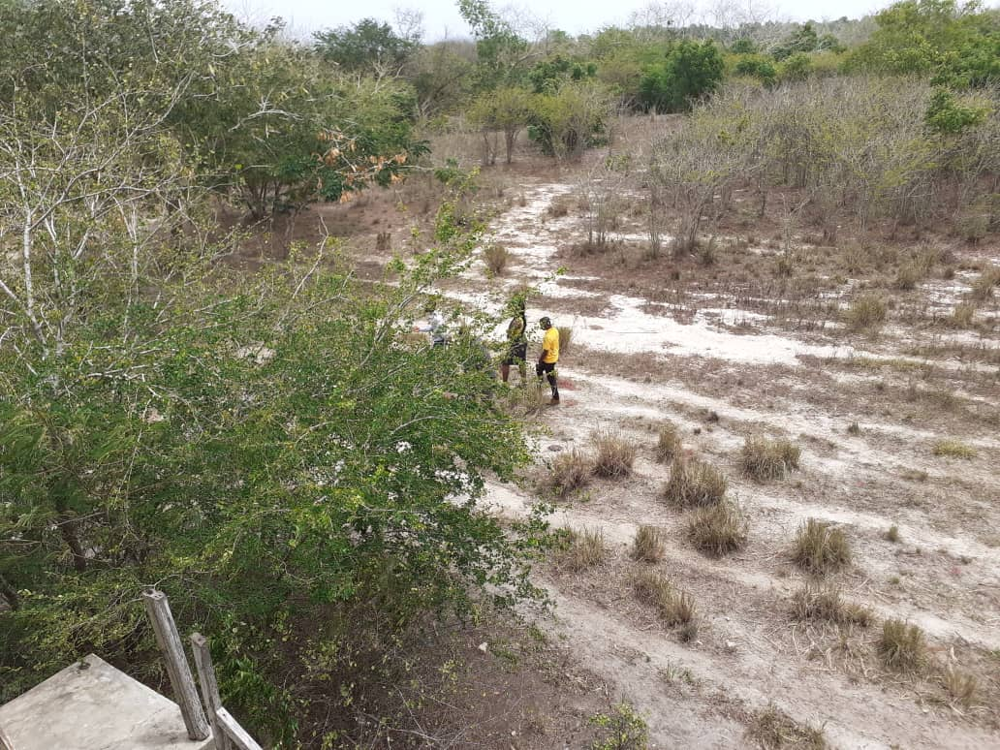
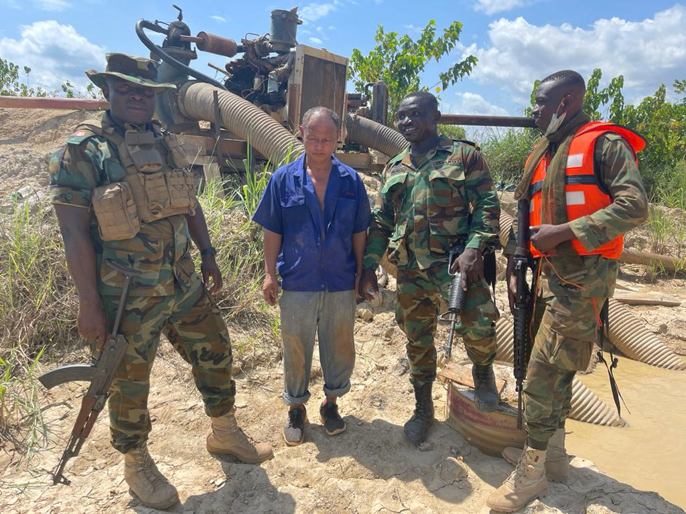

Who we are
The Centre for Remote Sensing and Geographic Information Services started as a Remote Sensing
Application Laboratory in 1990 at the Department of Geography and Resource Development,
University of Ghana, Legon. The Remote Sensing Application Unit developed its staff capacity to
provide contractual Remote Sensing and GIS services to its clients. In 2000, the status of the Remote
Sensing Application Unit changed to Centre for Remote Sensing and Geographic Information
Services (CERSGIS). The change of name meant change of strategic focus from a funded
establishment to a self-sustaining Non-profit Organization that focused on providing geographic
information and remote sensing services for sustainable development planning and management of resources...
News
 Encroachment On The Sakumo Ramsar Site The Sakumo Ramsar Site also known as the Sakumo Lagoon is a wetland of international importance. It is the only  A military officer laments about effects of galamsey Only a few years ago, the issue was with the illegal logging of trees in our forests for timber,MONITORING ARTISANAL MINING (GALAMSEY) IN GHANA The Artisanal mining sector of Ghana was seen to steadily grow in size and significance.